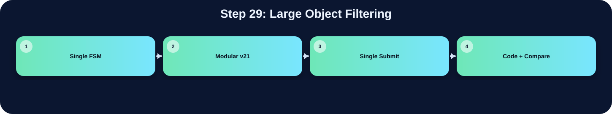

只保留足夠大的 bbox。

此表把本流程在三個版本中的 state/module 與 code 關係整理出來；沒有明確對應者保持空白。
| 版本 | 對應 state / module | 和 code 的關係 |
|---|---|---|
| Single FSM | S_BOXMAP_GEN | 呼叫 is_large_bbox()，只保留寬高都大於等於 16 的 bbox |
| Modular v21 | boxing_v21_fast | 只保留寬高大於條件的 bbox |
| Single Submit |
在「Large Object Filtering」流程中，並非三個版本都有獨立而明確的程式段落。Single FSM 版有明確對應，主要在 S_BOXMAP_GEN 完成，說明為：呼叫 is_large_bbox()，只保留寬高都大於等於 16 的 bbox。Modular v21 版有明確對應，主要在 boxing_v21_fast 完成，說明為：只保留寬高大於條件的 bbox。Single Submit 版沒有明確獨立此流程，對應原始碼區塊依需求保持空白。這種差異通常來自架構選擇：單一 FSM 會把多個小步驟合併在同一段 state；模組化版本則傾向把功能交給特定子模組；single_submit 則在單檔中保留 module-level 階段。
下方採用下拉式區塊顯示。中文說明放在程式碼上方；原始程式碼本身沒有修改、沒有插入註解。若某份檔案沒有明確對應流程，該程式碼區塊保持空白。
S_GAUSS_HIST = 6'd6,
S_OTSU_INIT = 6'd7,
S_OTSU_SCAN = 6'd8,
S_COUNT_HI = 6'd9,
S_POLARITY = 6'd10,
S_MASK_WRITE = 6'd11,
S_PARENT_INIT = 6'd12, // V16: clear parent/bbox arrays before CCL
S_LB_INIT2 = 6'd13, // CCL 前重新載入 line buffer
S_CCL_SCAN = 6'd14,
S_LB_ROW2 = 6'd15, // CCL 跨列 line buffer 更新
S_BBOX_INIT = 6'd16,
S_BBOX_SCAN = 6'd17,
S_BOXMAP_CLEAR = 6'd18,
S_BOXMAP_GEN = 6'd19,
S_DRAW_WRITE = 6'd20,
S_DONE = 6'd21,
// V19: split Otsu into multi-cycle states so DC sees one shared multiplier instead of many huge multipliers
S_OTSU_LHS = 6'd22,
S_OTSU_DENOM = 6'd23,
S_OTSU_SQUARE = 6'd24,
S_OTSU_CMP1 = 6'd25,
S_OTSU_CMP2 = 6'd26;
reg [5:0] state;
reg done_r;
assign done = done_r;
wire [31:0] unused_zero = (Ans_Q ^ Ans_Q);
// ============================================================
// 3-Row Line Buffer（取代 gray_mem[65535:0]）
// ============================================================
// V21: 3-bank line buffer.
// Instead of physically rotating 256 columns (prev<=curr, curr<=next),
// we keep three physical banks and rotate only 2-bit selectors.
// This preserves RTL alignment but is much easier for Design Compiler.
reg [7:0] linebuf_bank0 [0:255];
reg [7:0] linebuf_bank1 [0:255];
reg [7:0] linebuf_bank2 [0:255];
reg [1:0] lb_prev_sel, lb_curr_sel, lb_next_sel;
reg [31:0] hist [255:0];
reg [8:0] row_label [0:255];
reg [8:0] left_label;
reg [8:0] nw_label_hold;
reg [8:0] cur_label_comb;
reg [8:0] parent [MAX_LABELS-1:0];
reg bbox_valid [MAX_LABELS-1:0];
reg bbox_border [MAX_LABELS-1:0];
reg [7:0] bbox_xmin [MAX_LABELS-1:0];
reg [7:0] bbox_xmax [MAX_LABELS-1:0];
reg [7:0] bbox_ymin [MAX_LABELS-1:0];
reg [7:0] bbox_ymax [MAX_LABELS-1:0];
reg [15:0] addr_cnt;
reg [16:0] req_cnt;
reg [8:0] next_label;
reg [8:0] label_idx;
reg [7:0] edge_ctr;
reg [1:0] edge_stage;
// Line buffer loader
reg [7:0] lb_col; // 目前載入的欄
reg [7:0] lb_row; // 要從 UrSRAM 讀的列（供 S_LB_ROW 用）
reg [1:0] lb_phase; // 0=送addr, 1=等latency, 2=存資料
reg [1:0] lb_seq; // S_LB_INIT 階段序號 (0=prev, 1=curr, 2=next)
// lb_row_w：S_LB_INIT 階段根據 lb_seq 選擇要讀的 row
// 用 wire 避免 nonblocking timing 問題
wire [7:0] lb_init_row = (lb_seq == 2'd1) ? 8'd0 : 8'd1;
// seq=0: 讀 row1 (reflect of y=-1) → prev
// seq=1: 讀 row0 → curr
// seq=2: 讀 row1 → next
reg [7:0] otsu_t;
reg invert_sel;
reg [16:0] count_hi;
reg [31:0] wb_acc, sum_b_acc;
reg [7:0] otsu_idx;
reg [63:0] lhs48, rhs48;
reg [64:0] diff48;
reg [63:0] denom32;
reg [31:0] sum_total, wb_next, sum_b_next, otsu_idx32;
reg [129:0] square96, best_num;
reg [63:0] best_den;
reg [193:0] cmp_lhs, cmp_rhs;
// V19 synthesis-fast shared multiplier for Otsu.
// The original V18 S_OTSU_SCAN described several large multipliers in one cycle
// (32x32, 65x65, 130x64, 130x64). DC may spend a very long time optimizing them.
// Here all Otsu products go through one 130x64 combinational multiplier across
// several FSM states. RTL cycles increase by only ~5*256, but synthesis becomes much lighter.
reg [129:0] otsu_mul_a;
reg [63:0] otsu_mul_b;
wire [193:0] otsu_mul_y = otsu_mul_a * otsu_mul_b;
reg [7:0] ccl_x, ccl_y, ccl_base;
reg ccl_fg;
reg [8:0] ccl_n_w, ccl_n_nw, ccl_n_n, ccl_n_ne;
reg [8:0] ccl_chosen_label;
reg ccl_new_label;
reg [8:0] root_label;
reg [7:0] draw_ymax;
reg [31:0] first_pixel;
reg [1:0] special_box_idx;
reg [7:0] x_i, y_i, base_i;
// ============================================================
// function: refl101
// ============================================================
function [7:0] refl101;
input signed [31:0] v;
reg signed [31:0] t;
reg [31:0] tu;
begin
t = 32'sd0; tu = 32'd0;
if (v < 32'sd0) t = -v;
else if (v > 32'sd255) t = 32'sd510 - v;
else t = v;
tu = $unsigned(t);
refl101 = tu[7:0];
end
endfunction
// ============================================================
// function: gray_round_rgb
// ============================================================
function [7:0] gray_round_rgb;
input [31:0] pix;
reg [17:0] gs;
reg [9:0] gq;
reg [7:0] gr;
begin
gs = ({10'd0,pix[23:16]}*18'd77)+
({10'd0,pix[15:8]} *18'd150)+
({10'd0,pix[7:0]} *18'd29);
gq = gs[17:8]; gr = gs[7:0];
if ((gr>8'd128)||((gr==8'd128)&&(gq[0]==1'b1)))
gray_round_rgb = gq[7:0]+8'd1;
else
gray_round_rgb = gq[7:0];
end
endfunction
// ============================================================
// function: lb_read
// 從 line buffer 讀取，dy 為相對 row（-1/0/+1），含 x reflect
// ============================================================
function [7:0] lb_bank_read;
input [1:0] sel;
input [7:0] idx;
begin
case (sel)
2'd0: lb_bank_read = linebuf_bank0[idx];
2'd1: lb_bank_read = linebuf_bank1[idx];
2'd2: lb_bank_read = linebuf_bank2[idx];
default: lb_bank_read = 8'd0;
endcase
end
endfunction
function [7:0] lb_read;
input signed [31:0] xx;
input signed [31:0] dy; // -1, 0, +1（改用 signed 32-bit，DC 友善）
reg [7:0] rx;
begin
rx = refl101(xx);
if (dy < 32'sd0) lb_read = lb_bank_read(lb_prev_sel, rx);
else if (dy > 32'sd0) lb_read = lb_bank_read(lb_next_sel, rx);
else lb_read = lb_bank_read(lb_curr_sel, rx);
end
endfunction
// ============================================================
// function: gaussian_lb
// 3x3 Gaussian using line buffer
// ============================================================
function [7:0] gaussian_lb;`timescale 1ns/1ps
// ============================================================================
// File : drawBbox_report_style_clean_v1.v
// Module : drawBbox
// Lab : iVCAD Lab7 - Draw Bounding Box
//
// Design summary
// This RTL keeps a single public submit file while separating the image
// processing flow into four hardware stages. The top module is responsible
// only for stage scheduling and SRAM/ROM ownership selection. The arithmetic
// and image-processing operations stay inside their corresponding stage
// modules so that the synthesis tool can optimize smaller logic cones.
//
// Processing flow
// 1. threshold_v21_fast : RGB-to-gray conversion, 3x3 Gaussian smoothing,
// histogram accumulation, and Otsu threshold search.
// 2. polarity_v21_fast : foreground polarity decision using the number of
// pixels above/below the selected threshold.
// 3. ccl_v21_fast : connected-component labeling and equivalence-table
// resolution.
// 4. boxing_v21_fast : bounding-box coordinate extraction and green box
// overlay on the final output image.
//
// Fixed-point arithmetic notes
// Grayscale conversion is implemented as an integer approximation of
// Gray = 0.299R + 0.587G + 0.114B
// using Q16 coefficients:
// Gray = round_even((19595R + 38470G + 7471B) / 65536)
//
// Gaussian smoothing uses the separable 3x3 kernel
// [1 2 1; 2 4 2; 1 2 1] / 16
// and is implemented with shifts and additions instead of multipliers.
//
// Otsu score comparison avoids direct division in the critical comparison by
// using cross multiplication:
// score(T) = numerator(T) / denominator(T)
// score(a) >= score(b) <=> numerator(a)*denominator(b)
// >= numerator(b)*denominator(a)
//
// Interface note
// The external top-module name and ports are intentionally unchanged so the
// original Lab7 testbench can instantiate this design without modification.
// ============================================================================
module drawBbox (
input clk, // 系統時脈輸入
input rst, // 同步或非同步重置信號
input enable, // 啟動整體影像處理流程
output done, // 輸出完成旗標
// ImgROM
input [31:0] Img_Q, // ImgROM 讀回的 32-bit RGB pixel
output Img_CEN, // ImgROM 低有效 chip enable
output reg [15:0] Img_A, // ImgROM 讀取位址
// UrSRAM
input [31:0] Ur_Q, // UrSRAM 讀回資料
output Ur_CEN, // UrSRAM 低有效 chip enable
output Ur_WEN, // UrSRAM 讀寫控制，0 為寫入、1 為讀取
output [15:0] Ur_A, // UrSRAM 存取位址
output [31:0] Ur_D, // UrSRAM 寫入資料
// AnsSRAM
input [31:0] Ans_Q, // AnsSRAM 讀回資料
output Ans_CEN, // AnsSRAM 低有效 chip enable
output Ans_WEN, // AnsSRAM 讀寫控制，0 為寫入、1 為讀取
output [31:0] Ans_D, // AnsSRAM 寫入資料
output [15:0] Ans_A // AnsSRAM 存取位址
);
// ---------------------------------------------------------------------------
// Top-level stage controller
// The top FSM grants memory ownership to exactly one processing stage at a
// time. Each stage receives a one-cycle start pulse only after the FSM has
// entered that stage, preventing a submodule from using a stale bus owner.
// ---------------------------------------------------------------------------
localparam ST_IDLE = 3'd0; // FSM 狀態或常數參數宣告
localparam ST_THRES = 3'd1; // FSM 狀態或常數參數宣告
localparam ST_POL = 3'd2; // FSM 狀態或常數參數宣告
localparam ST_CCL = 3'd3; // FSM 狀態或常數參數宣告
localparam ST_BOX = 3'd4; // FSM 狀態或常數參數宣告
wire box_done; // bounding-box stage 完成旗標
reg [2:0] state, next_state; // 目前 top FSM 狀態
reg [2:0] state_d; // 前一拍 top FSM 狀態，用於產生 start pulse
always @(posedge clk or posedge rst) begin
if (rst) begin
state <= ST_IDLE;
state_d <= ST_IDLE;
end else begin
state_d <= state;
state <= next_state;
end
end
// Stage-aligned one-cycle start pulses.
// A pulse is generated on the first cycle after the top controller changes
// stage, so the memory mux and control path are already consistent.
wire start_thres = (state == ST_THRES) && (state_d != ST_THRES); // 子模組 one-cycle start pulse 控制信號
wire start_pol = (state == ST_POL) && (state_d != ST_POL); // 子模組 one-cycle start pulse 控制信號
wire start_ccl = (state == ST_CCL) && (state_d != ST_CCL); // 子模組 one-cycle start pulse 控制信號
wire start_box = (state == ST_BOX) && (state_d != ST_BOX); // 子模組 one-cycle start pulse 控制信號
// ---------------------------------------------------------------------------
// Stage 1: grayscale, Gaussian filter, histogram, and Otsu threshold search
// ---------------------------------------------------------------------------
wire [7:0] threshold; // Otsu 計算後的 8-bit threshold
wire thres_done; // threshold stage 完成旗標
wire thres_img_cen; // 記憶體 chip enable 控制信號
wire [15:0] thres_img_addr; // 記憶體位址匯流排信號 new_label <= 10'd1;
buffer_count <= 8'd0;
pixel_idx_write <= 16'd0;
write_done <= 1'b0;
write_finish <= 1'b0;
flatten_idx <= 10'd1;
ans_addr <= 16'd0;
write_pass_2_done <= 1'b0;
write_pass_2_finish <= 1'b0;
consecutive_label <= 10'd1;
ans_wen <= 1'b1;
ans_cen <= 1'b1;
ans_D <= 32'd0;
labeler_done <= 1'b0;
buffer_done <= 1'b0;
flatten_done <= 1'b0;
READ_PASS_1_done <= 1'b0;
read_pass_2_done <= 1'b0;
pass2_addr <= 16'd0;
read_1_pixel <= 16'd0;
buffer_count_read <= 8'd0;
end
READ_PASS_1:begin
if(write_done_d) begin
pixel_idx_write <= pixel_idx_write + 16'd1;
for(j = 0;j < 256; j = j+1)begin
line_buffer[j] <= label_buffer[j];
//line_buffer[j] <= line_buffer[j+256]; // -----------------------
end
end else begin
img_cen <= 1'b0;
img_addr <= read_1_pixel;
if(read_1_pixel[7:0] < 8'd255)read_1_pixel <= read_1_pixel + 16'd1;
//if(img_addr[7:0] < 8'd255)img_addr <= img_addr + 16'd1;
// input img (waiting two clock let the signal in)
// start from row1 of buffer because the first row of picture would all be 0
if(!img_cen_d)begin
if(buffer_count_read < 8'd255)begin
line_buffer[{1'b1,buffer_count_read}] <= bin_img_Q;
buffer_count_read <= buffer_count_read + 8'd1;
READ_PASS_1_done <= 1'b0;
end else begin
line_buffer[{1'b1,8'd255}] <= bin_img_Q;
READ_PASS_1_done <= 1'b1;
buffer_count <= 8'd0;
end
end
end
end
WRITE_PASS_1:begin
if(READ_PASS_1_done)begin
buffer_count_read <= 8'd0;
READ_PASS_1_done <= 1'b0;
img_cen <= 1'b1;
end else begin
if(buffer_done)begin
buffer_count <= 8'd0;
ans_wen <= 1'b0;
ans_cen <= 1'b0;
ans_addr <= pixel_idx_write;
ans_D <= {22'd0, label_buffer[pixel_idx_write[7:0]]};
//ans_D <= {22'd0, line_buffer[pixel_idx_write[7:0]]}; // ---------------
if(pixel_idx_write[7:0] < 8'd255)begin
pixel_idx_write <= pixel_idx_write + 16'd1;
end else begin
write_done <= 1'b1;
buffer_done <= 1'b0;
read_1_pixel <= read_1_pixel + 16'd1;
//buffer_count <= 8'd0;
end
if(ans_addr == 16'd65535)begin
write_finish<= 1'b1;
ans_wen <= 1'b1;
end
end else if (write_done) begin
// 🛑 終極解藥：捕捉幽靈週期！ 🛑
// 當硬體準備切換到 READ_PASS_1 時，會有一拍的延遲掉進這裡。
// 我們在這裡把 write_done 降下來，並且「不執行任何 CCL 運算」，保護 eq_table！
write_done <= 1'b0;
end else if (!write_finish) begin
ans_wen <= 1'b1;
ans_cen <= 1'b1;
write_done <= 1'b0;
// neighbor are all 0, so give it a new label
if(line_buffer[{1'b1,buffer_count}])begin
if(!neighbor_N && !neighbor_NE && !neighbor_NW && !neighbor_W)begin
label_buffer[buffer_count] <= new_label;
//line_buffer[buffer_count] <= new_label; // -------------
//line_buffer[{1'b1,buffer_count}] <= new_label;
new_label <= new_label + 10'd1;
// neighbor at least one is nonzero, so give it the smallest label, and equive all nonzero label
end else begin
//line_buffer[{1'b1, buffer_count}] <= min_neighbor;
label_buffer[buffer_count] <= min_neighbor;
//line_buffer[buffer_count] <= min_neighbor; // ---------------------
/*if (neighbor_W != 0 && neighbor_W != min_neighbor) eq_table[neighbor_W] <= min_neighbor;
if (neighbor_NW != 0 && neighbor_NW != min_neighbor) eq_table[neighbor_NW] <= min_neighbor;
if (neighbor_N != 0 && neighbor_N != min_neighbor) eq_table[neighbor_N] <= min_neighbor;
if (neighbor_NE != 0 && neighbor_NE != min_neighbor) eq_table[neighbor_NE] <= min_neighbor;*/
// ✨ 終極完全體：保護樹根的 Heuristic 合併法
if (neighbor_W != 0 && neighbor_W != min_neighbor) eq_table[eq_table[neighbor_W]] <= min_neighbor;
if (neighbor_NW != 0 && neighbor_NW != min_neighbor) eq_table[eq_table[neighbor_NW]] <= min_neighbor;
if (neighbor_N != 0 && neighbor_N != min_neighbor) eq_table[eq_table[neighbor_N]] <= min_neighbor;
if (neighbor_NE != 0 && neighbor_NE != min_neighbor) eq_table[eq_table[neighbor_NE]] <= min_neighbor;
end
end else begin
//line_buffer[buffer_count] <= 10'd0; // ------------------------
label_buffer[buffer_count] <= 10'd0;
end
if(buffer_count < 8'd255)begin
//buffer_done <= 1'b0;
buffer_count <= buffer_count + 8'd1;
end else begin
buffer_done <= 1'b1;
end
end
end
end
FLATTEN_TABLE:begin
ans_cen <= 1'b1;
ans_wen <= 1'b1;
img_addr <= 16'd0;
if(flatten_idx < new_label)begin
// Situation A : it is a root
if (eq_table[flatten_idx] == flatten_idx) begin
eq_table[flatten_idx] <= consecutive_label;
consecutive_label <= consecutive_label + 16'd1;
// Situation B : it points to previous one
end else begin
eq_table[flatten_idx] <= eq_table[eq_table[flatten_idx]];
end
flatten_idx <= flatten_idx + 10'd1;
end else begin
flatten_done <= 1'b1;
end
ans_addr <= 16'd0;
end
READ_PASS_2:begin
ans_cen <= 1'b0;
ans_wen <= 1'b1;
ans_addr <= pass2_addr;
write_pass_2_done <= 1'b0;
read_pass_2_done <= 1'b1;
end
WRITE_PASS_2:begin
read_pass_2_done <= 1'b0;
if(read_pass_2_done_d)begin
if(pass2_addr == 16'd65535)begin
ans_wen <= 1'b0;
ans_cen <= 1'b0;
ans_D <= {16'd0, eq_table[ans_Q[15:0]]};
write_pass_2_finish <= 1'b1;
end else begin
ans_wen <= 1'b0;
ans_cen <= 1'b0;
pass2_addr <= pass2_addr + 16'd1;
ans_D <= {16'd0, eq_table[ans_Q[15:0]]};
write_pass_2_done <= 1'b1;
end
end
end
DONE:begin
ans_cen <= 1'b1;
ans_wen <= 1'b1;
labeler_done<= 1'b1;
end
endcase
end
end
endmodule
// ================================================================
// Source: boxing.v
// ================================================================
module boxing(
input clk,
input rst,
input enable,